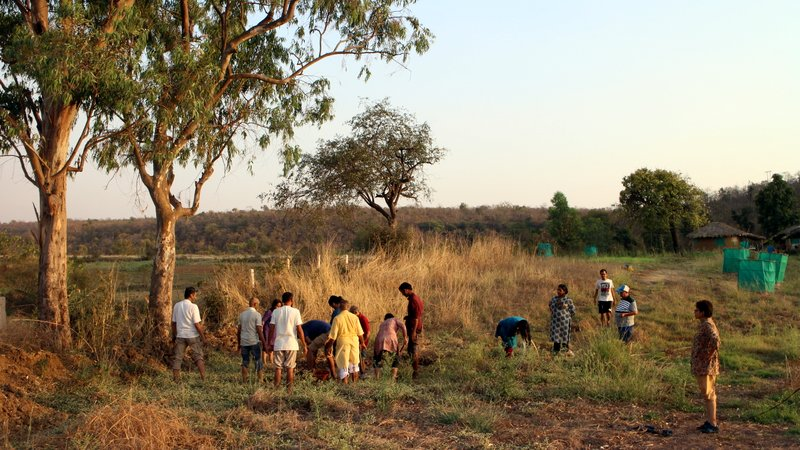

Sehatvan
Sustainable health and ideas

BECAUSE LIFE IS A ONETIME AFFAIR
Registration Link
CLUB 125 gathering
What is it?
A small support group with the primary objectives that all members shall, till their 125th birthday:
- actively engage in keeping themselves physically fit and youthful
- responsively engage in keeping their bit of planet earth livable.
Background Note
It is practically possible to live youthfully beyond a 100 years - findings on DNA telomerase, autophagy and glycation linked studies indicate so. And this doesn’t need more money or medical interventions, on the contrary, spending less but having a proper lifestyle makes it. The bigger problem is densely populated areas of the planet earth may no more remain livable in a few decades. Climate scientists forecast that in next 2 to 3 decades 2/3rd of human population living in urban areas will be wiped out. Henceforth, those who are happy about life may aspire living long by taking care of themselves and, of course, their bit of the planet earth!
If truth be told, health is not a priority for most people. In fact, in many cases, it comes at 4th after money, career and family unless it’s affecting the first 2. We are bored in life, tired of it even, passively waiting to die. Overtaken by rat-races and slowly forgetting the very essence of life.
Club 125 is our chance to change that and truly become whole in ourselves, in harmony with the only home we have ever known.
Call for Meeting
An initiation meeting towards the formation of the group is proposed with following agenda:
- Pooling-in everybody’s wisdom, fears, perspectives, concerns and apprehensions.
- Holding each-other’s hand and forming a community.
- Understanding the science, art and economics of longevity, youthfulness and livability.
Time: June 9 (Fri, 10 am) to 11 (Sun, 4 pm), 2017
Venue: Sehatvan, Bhopal
Facilitator: Dr Vipin Gupta, Former Drug-Discovery-Scientist (Tel 9826774144, Email vbgupta@hotmail.com)
Logistics:
Suggested Contribution: INR 2000
A minimalistic stay & food arrangement will remain available at Sehatvan. Good time to reach there would be by 6 pm of June 8 or by 9 am on June 9. Visit www.Sehatvan.in to know more about the place and how to reach there. Tel: 8602525887
Registration Link

Feedback from last retreat -
- Enjoyed the technical session on science of ageing. Yes! There is a hope to live a healthy and long life, I could see people are concerned and willing to change themselves and support others to do the same. - Anonymous
- Better understanding of the food I routinely consume. A new zeal about ‘seeing’ my health. How important health is and yet how I prioritise it at last, how caught up I’m with food’s taste and flavour and how little I care about for the nutrition in it and what it does to my body. Abhay, 54, Bhopal
- My takeaways - self-confidence, wellness, new learnings, much compassion and अपनापन and confidence to be young again. I got to live with a very compassionate community. - Chitra, 55, Delhi
- Love, becoming conscious of health. Best parts were trekking and circles talking with different people and knowing their life experiences. And becoming friends with such diverse age group - Joey, 20, Indore
- Taking back a lot of confirmations, positive energy, resolution of doubts, friendship, joy , laughter , a strong support for health of being - environment and how it is linked to our old systems. A lot of memories and ideas of delicious healthy food made without much effort. I will tell my friends - I am a part of a community which is trying to reduce its carbon footprint and simultaneously understand our body and health, and the environment with respect to it. Ankit, 26, Guwahati